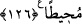

sorumlulukları ta’zim ve huşû içinde yerine getirerek ihsan sâhibi olur.
“ve İbrâhim’in Allah’ı bir tanıyan dînine tâbi olan kimseden dînce daha güzel kim
vardır?”
Bu soru, inkârî bir sorudur. “Din ve “millet” kelimeleri esas olarak bir, izâfî olarak
farklıdır. Şerîat, itâat edilmesi hasebiyle “din”, imlâsı ve yazılması yönüyle de “millet”
manasınadır.
İbrâhim (a.s)’ın dîni, bütün dinler arasında sıhhati ve makbûliyeti husûsunda ittifak
edilen ve İslâm’a uygun bir dindir. Hz. Mûsâ, Hz. Îsâ ve diğer peygamberlerin
(aleyhimüsselâm) dinleri ise herkes tarafından kabul görmemiştir.
“Hanîf, bozulmuş dinlerden yüz çeviren demektir.
Sonra Allah İbrâhim (a.s)’ın dînine uymaya teşvik ederek şöyle buyurmuştur: “Allah
İbrâhim’i dost edinmiştir.” Yâni onu seçmiş ve ona dostun dosta ikrâmına benzer
ikramda bulunmuştur. “Hullet” (dostluk) kelimesi, “hılâl” lafzından gelmiştir. Bu da
insanın içine nüfûz edip yer eden dostluk demektir.
126- Göklerde ve yerde olanların hepsi Allah’ındır ve Allah her şeyi kuşatmıştır.
“Göklerde ve yerde olanların hepsi Allah’ındır.” Sanki burada “Allah Teâlâ’nın
kendisine ibâdet edecek çok şerefli kulları, yâni melekleri olduğu halde niçin İbrâhim
(a.s.)’ı kendisine dost olarak tahsis etmiştir?” diye sorulmuş ve cevap olarak şöyle
denilmiştir: Yerde ve göklerde ne varsa hepsi yaratma ve mülkiyet yönünden,
Allah’ındır. Onlardan dilediğini seçer.
“Allah” ilmi ve kudretiyle “her şeyi kuşatmıştır.” Allah Teâlâ’nın ilim ve kudreti
göklerin ve yerin içindeki ve dışındaki kâinatta olan her şeyi kuşatmıştır.
Rivâyet edildiğine göre Hz. İbrâhim (a.s.) halkının kıtlık yüzünden sıkıntıda olduğu
bir zaman Mısır’daki dostundan erzak getirmek üzere bir heyet gönderdi. Mısır’daki
dostu ise gelen o kimselere: “Eğer İbrâhim (a.s.) bu erzakı kendisi için istiyorsa
veririm. Fakat o bunu kendisi için değil misafirleri için istiyor. Sizin çektiğiniz sıkıntı
bizde de var.” diyerek geri çevirdi. Onlar elleri boş döndüklerinden dolayı insanlardan
utandıkları için toprağı yumuşak bir arâzîden geçerken çuvallarını kumla doldurdular.
İbrâhim (a.s.)’a bunu haber verdiklerinde çok üzüldü. Sonra uykusu gelip uyudu.
O sırada hanımı Sâre çuvallardan birini açıp ondan ekmek pişirdi. Kumlar una
dönüşmüştü. İbrâhim (a.s.) uyandığında ekmeğin kokusunu aldı ve Sâre’ye “Bu yaptığın
nereden geldi?” deyince Sâre, “Senin Mısır’lı dostundan” diye cevap verdi. İbrâhim